今日の世界
毎日ひとつ、みんなに同じ世界。
言語
この翻訳は下書きで、まだネイティブスピーカーによる確認を受けていません。

Abidora は無料のサイト。本物の 3D を回して、変えて、遊べます。服、靴、ゲーム、宇宙、そして AI アシスタント。
どのポータルも、独自の姿と本当にできることを持つ世界へ。ファッションから深宇宙まで、7つの領域。

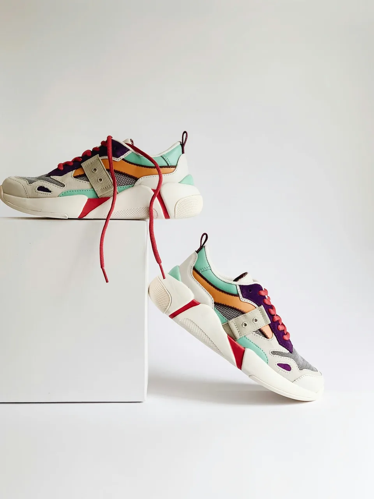


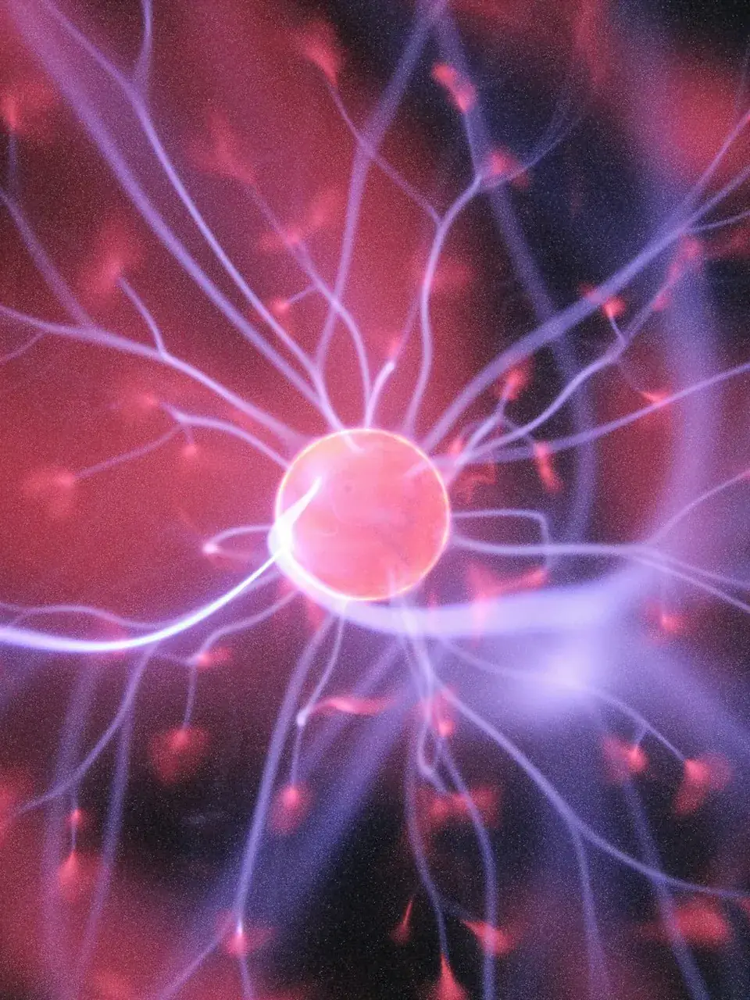
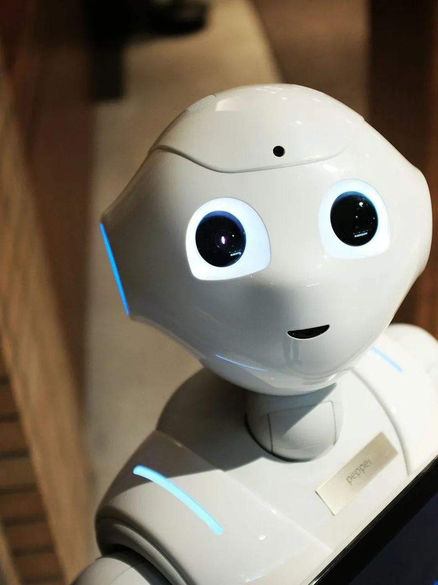
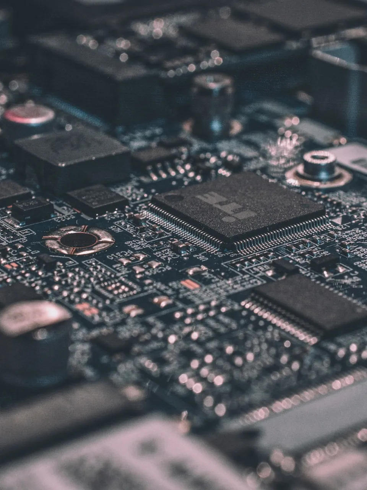
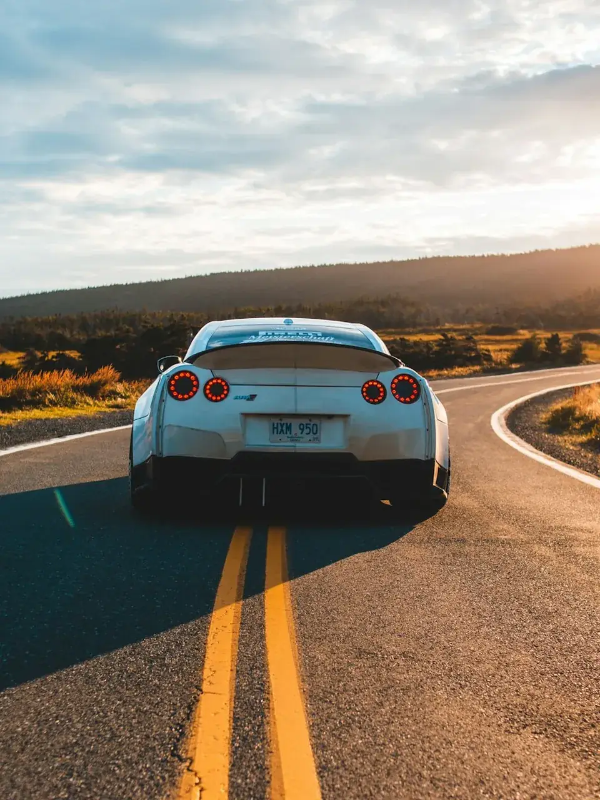


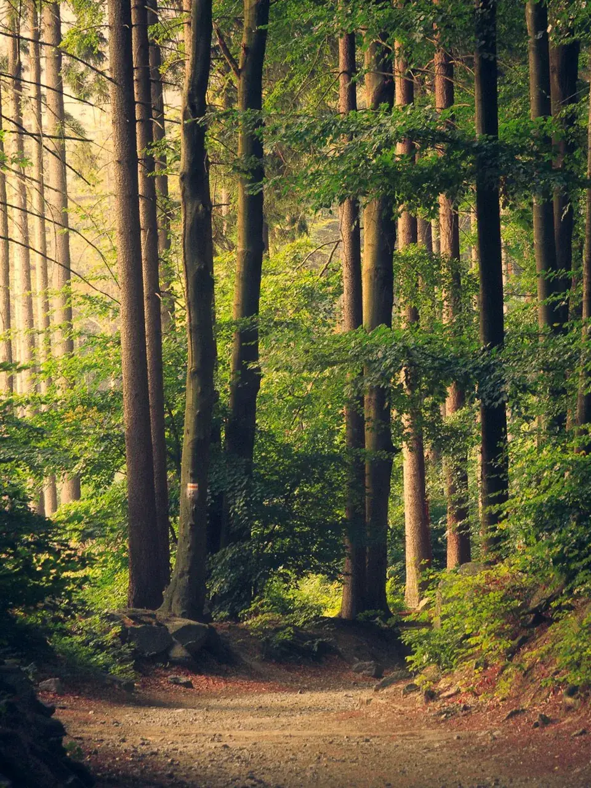
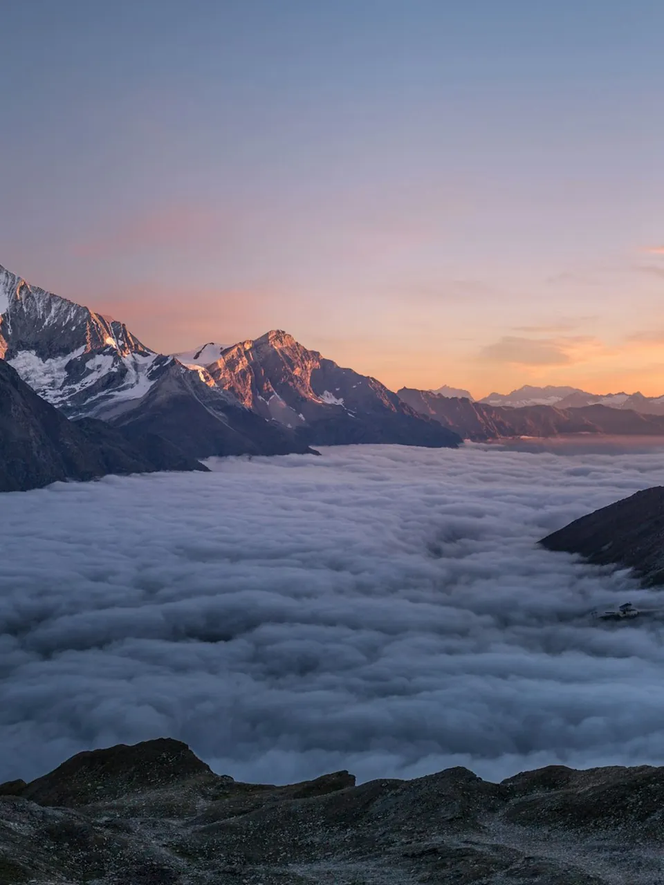

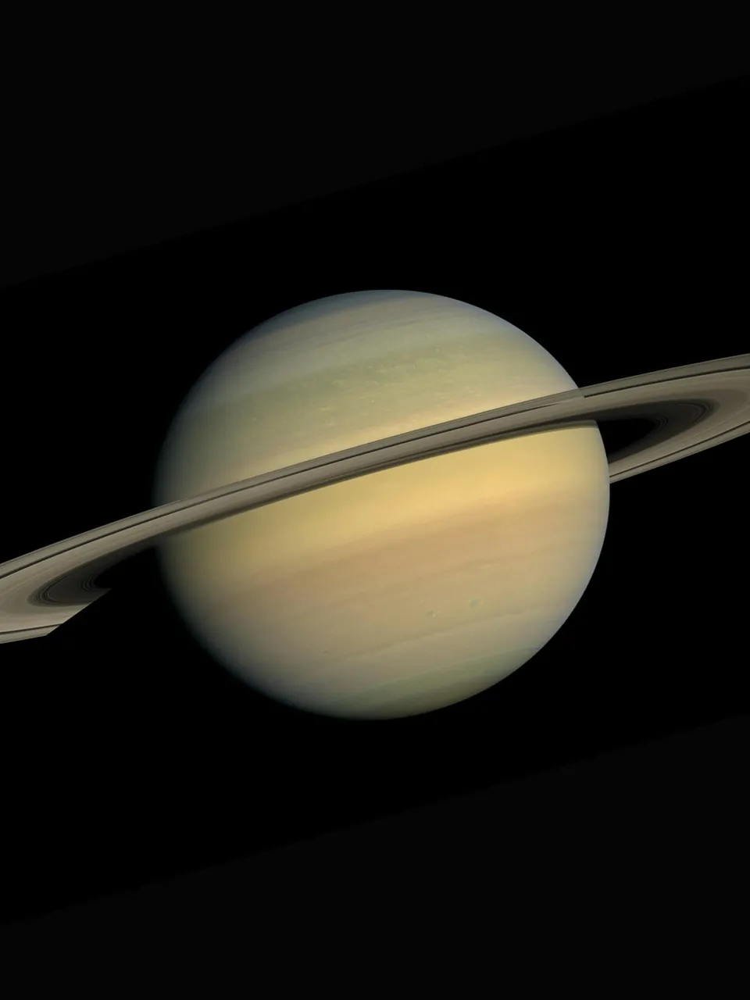


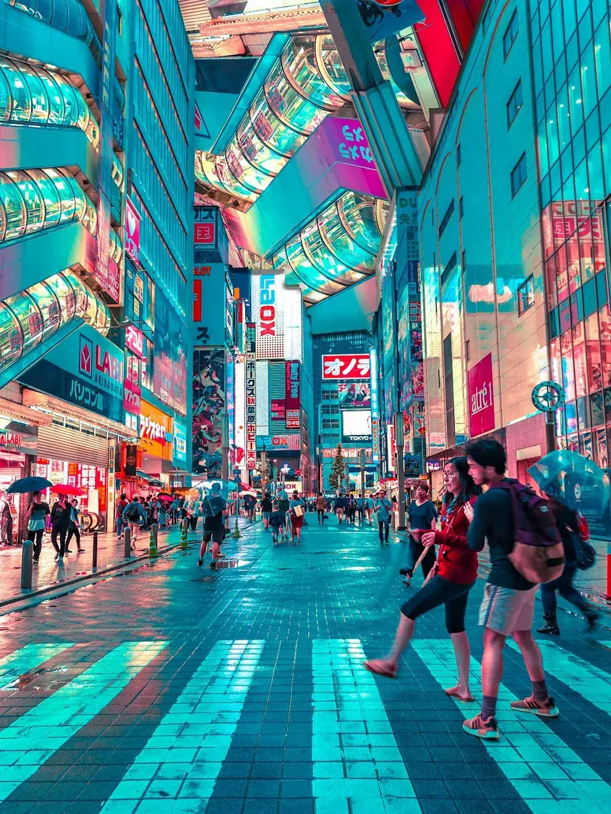


ドラッグで回転 · ポータルをクリックスワイプで見る · タップで入る
7 つのワールドファミリー。どれも本物の 3D、写真、体験があります。タップしてワールドを見る。
4 のワールドファッション＆ライフスタイルクロージング・ワールド · スニーカー・ワールド · ラグジュアリーバッグ・ワールド · 時計とジュエリーワールドを見る 4 のワールド自然＆野生動物オーシャン・ワールド · ワイルドライフ・ワールド · フォレスト・ワールド · マウンテン・ワールドワールドを見る 4 のワールド宇宙＆サイエンスギャラクシー・ワールド · ソーラーシステム・ワールド · アストロノミー・ワールド · サイエンス・ディスカバリーワールドを見る 毎日ひとつ、みんなに同じ世界。
今の気分は？
まだ開いていない世界をランダムに。
Abidora は 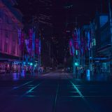 あらゆるもののアトラス。宇宙、
あらゆるもののアトラス。宇宙、 海、そして
海、そして  私たちが愛するモノ。そのすべてを生きたウェブサイトとして描き直します。
私たちが愛するモノ。そのすべてを生きたウェブサイトとして描き直します。
ユニバースの12の領域。行にカーソルを合わせると中をのぞけます。新しいワールドの完成とともに、領域は増えていきます。 すべてのワールド
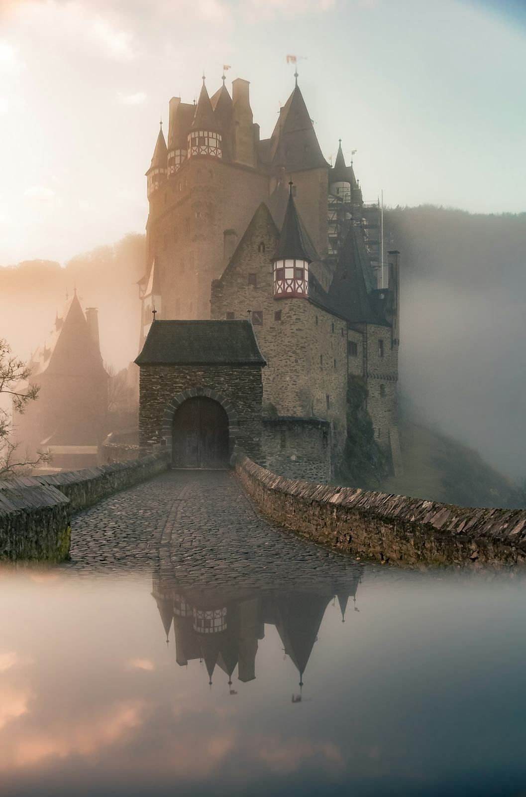
カスタマイズ機能の最初のひと口。変更はすぐにページ全体へ反映され、あなたのブラウザにだけ記憶されます。